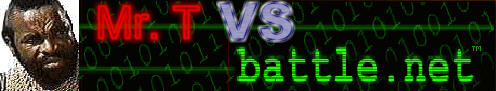
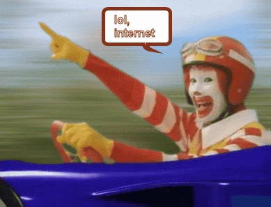
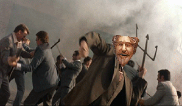
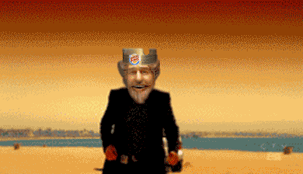
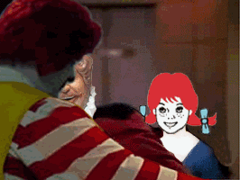
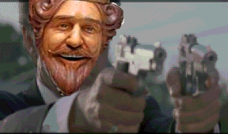
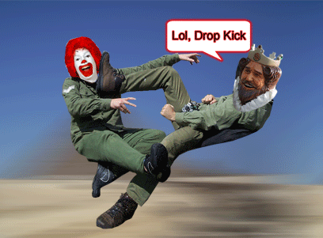
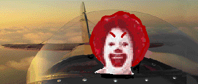

History From 1995 - 2008
Early Internet 1994-1997
Kali Community and Gifs - I spent a fair amount of time as a kid on the now defunct gaming platform Kali. This offered chatrooms with the ability to share gifs and the ability to play IPX emulation over 33.6 and 56k modems.
Faster Speeds 1998-2002
The advent of faster speeds and use of Flash allowed more interesting types of sites that were interactive see somethingawful.com and fark.com.
When I was 12 I made a Mr. T vs Battle.net meme.
At one point it had over a million hits.

Early Broad Band Era 2003-2008
Sites such as YTMND - You're the man now Dog! became an absurd collection of simple memes with music on a background. This internet absurdism went on to be mainstream humor through the SNL group Lonely Island. Andy Samberg was heavily influenced by internet culture of the early 00s. While YTMND went down back in 2019 it's influence on internet culture can not really be overstated.
YTMND Gifs
 